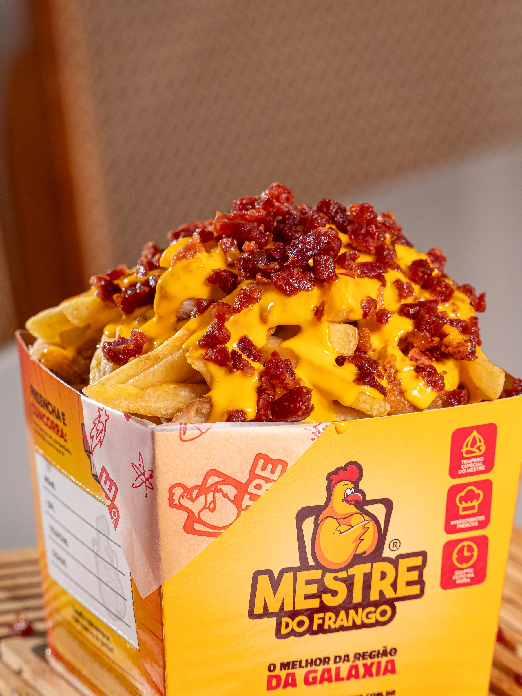

Mestre do Frango
Atual
Uma direção criativa para toda a franquia. Design, fotografia e campanhas conectados pela mesma visão de marca.
- Projeto
- Direção criativa, design e campanhas
- Cliente
- Mestre do Frango
- Ano
- Atual
- Categorias
- Design
Fotografia - Atuação
- Diretor Criativo de toda a franquia
Marca consistente em escala
Como Diretor Criativo de toda a franquia Mestre do Frango, conduzo a expressão visual da marca em trabalhos de design, fotografia e campanhas. A atuação contínua conecta as necessidades comerciais da rede a uma comunicação reconhecível, com unidade entre os diferentes materiais e pontos de contato.
Do produto ao desejo
Fotografia de produto, cenas de consumo e peças de campanha se complementam para apresentar o universo da marca. Texturas, cores e composições valorizam o apelo dos alimentos, enquanto o design organiza a mensagem de cada ação. O conjunto aproxima produto, experiência e comunicação, com foco na presença da franquia no cotidiano do público.